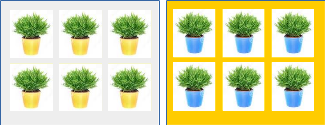
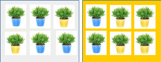
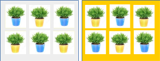
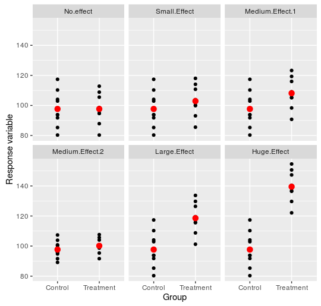
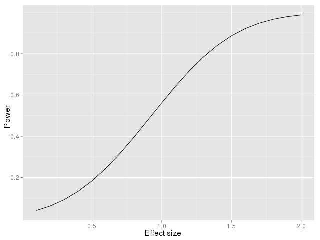
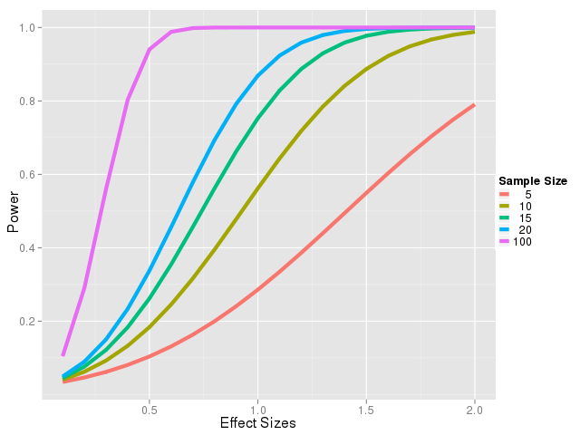

Experiments test for cause and effect relationships between variables, by manipulating a predictor variable and observing change in a response variable. A good experiment should do two things:
- It should enable us to detect real treatment effects, if they exist, with a minimum of time and money expended
- It should eliminating the possibility that we will conclude there is a cause and effect relationship between variables when there isn't one.
Whether an experiment is successful in reaching these goals is not completely under the control of the scientist. However, success is strongly influenced by choices the scientist makes in designing the experiment, and it is certainly possible for bad design choices to make correct conclusions impossible to reach.
In your introductory statistics class you probably learned some form of the Experimental Ideal - that is, that you should hold constant every possible "nuisance" variable that could affect your data, and manipulate only the predictor variable whose effects you are testing. You may have also learned that variables that can't be held constant should be randomized to avoid having them produce a spurious result - that is, one that appears to be due to the treatment, but is instead due to some other difference between the groups.
But, now that you are learning to use more complex statistical models to analyze data, you have available to you a third option for dealing with nuisance variables - namely, measuring them and statistically eliminating them from your test of the treatment. You learned how to use multiple regression to statistically eliminate a nuisance variable last week, and the same basic principle applies to categorical variables as well. The method used to statistically eliminate a nuisance categorical variable is called blocking.
Let's look at a quick plant growth experiment example to illustrate how blocking works. Say you are testing the effects of fertilizer on plant growth, and you have six pots in each of two treatment groups: fertilized and control. You have two greenhouses to use, and only have enough in each for six of your twelve pots. Greenhouses can have different growing conditions (temperature, humidity) that affect plant growth, so greenhouse is a nuisance variable. How should you allocate the pots?
|
A conspicuously bad choice would be to do this - all of the control plants (yellow pots) are in one greenhouse (gray), and all the fertilized plants (blue pots) are in another (orange). If we see a difference between control and fertilized pots, we can't be sure it's due to the fertilizer, because it could just as easily be an effect of greenhouse. Greenhouse and treatment are confounded, meaning that they can't be told apart. You can think of the confounded effects issue this way - to test the effect of a treatment, you need to isolate its effects from any other possible cause of a response. This means that your experiment should make it impossible for any factor other than the treatment of interest to be responsible for the observed responses - a good experiment leaves only one viable explanation for the results. With this confounding of greenhouse and fertilizer treatment, there are two viable explanations for the result - bad design. |
 |
|
Dealing with the nuisance greenhouse effect by randomizing would look like this - every pot is selected at random to be assigned to a greenhouse, regardless of its treatment type. We wouldn't record the greenhouse and account for it here - we would just trust that randomizing prevents greenhouse from being confounded with treatment, and would analyze the data with a simple one-way ANOVA. It's true that treatment and greenhouse are not completely confounded anymore, but they aren't completely independent of one another either. By chance you will often end up with more of one treatment in one greenhouse and this unevenness at least some of the apparent effect of fertilizer could be due to an effect of greenhouse instead. But, even more problematically, any effect that greenhouse has on the data is still present in the data, and we aren't accounting for it. The variation due to greenhouse becomes part of the error term in our ANOVA table. |
 |
|
The best approach, that both prevents confounding and minimizes the size of the error term, is to block on greenhouse. Blocking means to use all possible combinations of treatment level and block - so, control and fertilized pots appear in each greenhouse, which makes this a complete block design. Assuming we have already randomly assigned pots to treatment and control groups, we would also want to randomly select which of the controls go to greenhouse 1, and which go to greenhouse 2 - this makes the design a randomized complete block design. Using the same number of each treatment level in each greenhouse makes it a balanced randomized complete block design. |
 |
To get the full benefit of blocking, you need to do two distinct things, each with a different benefit:
-
You need to use a balanced, randomized complete block design when you execute the experiment. The benefit of doing this is that that there is no confounding at all of treatment and greenhouse. Even if we didn't account for the greenhouse block effect in our statistical analysis, blocking on greenhouse in the experiment equally distributes the greenhouse effect between the two treatment levels, and we could not possibly mistake an effect of greenhouse for an effect of fertilizer treatment - we have made greenhouse and treatment orthogonal by design.
-
You need to account for the block effect in your statistical analysis. If we didn't include greenhouse as a predictor, all of the variation due to greenhouse would end up in the error term. Using the greenhouse block variable as a predictor in our ANOVA places all of the effect of greenhouse into the greenhouse term in the ANOVA table, and keeps it out of the error term. Doing this increases the effect size for the fertilizer treatment.
This last statement may strike you as foolishness - accounting for the effect of greenhouse is good stuff, sure, but it doesn't change the effect of the fertilizer, right? To understand what I mean by increasing the effect size, you need to understand what statisticians mean by effect size.
Effect size
Effect size refers to the amount of differential response that is produced by the treatments. A simple measure of effect size for a two-group experiment is the number of standard deviations between group means, which is known as "Cohen's d". To calculate it, you divide the amount of difference between two means by the pooled standard deviation: d = (xtreatment - xcontrol) / s.
You can think of Cohen's d as a signal to noise ratio, where the signal is the amount of difference between the group means that you've measured, and the noise is unexplained random variation in the data.
|
There is no universally accepted criteria for interpreting effect sizes, and there are several different measures that could be used, but for Cohen's d effect sizes over 1 are generally considered large, effect sizes around 0.5 are moderate, and effect sizes of 0.1 or less are small. The graphs to the right illustrate what effects of various sizes might look like - red dots are group means, and black dots are the individual measurements.
You can see that in the first panel, labeled "No.effect" there is no difference between the means, so with a numerator of 0 d is 0. Small, but non-zero, effects result from real, population-level differences in means between groups that are small compared with the amount of variability in the data. The next two graphs (Medium.Effect.1 and Medium.Effect.2) have
the same effect size, even though the graphs look different. The
difference between mean in Medium.Effect.1 is about twice as big
as in Medium.Effect.2, but Medium.Effect.1 also has a standard
deviation that's twice as big, so they both show the same number
of standard deviations between means.
The biggest effect sizes result from large differences between treatment groups compared with the random variation within each group. The Huge.Effect graph is an example with differences between means large enough that the data values don't overlap between the groups. |
 |
Given what you know about how statistical testing is done, which effect size has the greatest chance of giving us a statistically significant result?
Click here to see if you're right.
The probability of rejecting the null hypothesis when there is a real experimental treatment effect is called "power", which is 1- β (with β being the probability of failing to detect a real difference - we encountered this earlier as the Type II statistical error). Since rejecting the null means to statistically "detect" the treatment effect, you can think of power as the probability of detecting a real treatment effect in an experiment.
|
If we plot the power of a comparison between two means as a function of effect size, with a sample size of 10 per group, we get this power curve. It should be clear from this curve that real, but small, effects can easily escape detection. We consider an effect of 0.5 standard deviations to be moderate, but the probability of detecting an effect of size 0.5 is below 0.2 for this sample size of 10. This means that even if the treatment does have a moderately large effect, with a sample size of 10 observations per group we would miss it over 80% of the time. With a small effect size of 0.1 we have less than a 10% chance of detecting it with a sample size of 10. |
 |
|
We know that increasing sample size will increase power, so let's look at power curves for different sample sizes to see how this helps us. |
|
|
A plot of power vs. effect size for various sample sizes is plotted to the right. Each line is a different sample size, and increasing the sample size puts the line higher on the curve. So, for any given effect we are trying to detect, an increase in sample size increases our chances of detecting it. If you look at a large effect size of 1, the probability of detecting the effect goes from about 0.3 at a sample size of 5, to 0.55 at a sample size of 10, to 0.75 at a sample size of 15, to 0.85 at a sample size of 20, to 0.99 at a sample size of 100. Sample sizes of 20 or above gives us good power to detect an effect size of 1. For really big effect sizes, like 2, we have a probability of 0.8 of detecting the effect with a sample size of 5, and probabilities in the upper 0.9 range for all the others. On the other end of the effect size spectrum, at a small effect size of 0.1 we still have only about a 10% chance of detecting the effect, even with a sample size of 100. |
 |
So, even though sample size is an investigator's choice, and increasing sample size always helps increase power, be aware that collecting more data may not be enough if you are working with small to medium effect sizes. To the extent that it's possible to adopt experimental procedures that convert small effect sizes into large effect sizes, it's clearly in your best interests to do so.
How do we affect effect size?
If effect size is a signal to noise ratio, our choices are to either boost the signal or reduce the noise.
We do have some experimental control over the size of the signal - choice of treatment levels is a major determinant of the size of response we will get. In our plant growth example, you want to use enough fertilizer to produce a nice robust change in growth in the fertilized plants relative to the controls. However, there are limits to how far you can push this - if you want your results to pertain to the real world you can't use higher treatment levels than are likely to ever by used, and you don't want to use so much fertilizer that you over-dose the plants and kill them.
We have more control over the noise component. One way to reduce the noise is to be careful in our measurements, because sloppiness adds to the random variation in our data. We can also reduce noise by holding as many factors constant as possible.
But, you can also reduce the noise by using a block design, and by accounting for the block in your ANOVA. In an ANOVA, the error term is the measurement of noise in the data, so anything that reduces the size of the error term will make the effect size bigger. Extracting the variation due to greenhouse from the error term and putting it into the block effect therefore actually increases the effect size for the fertilizer treatment, without doing anything to increase the amount of growth that the fertilizer causes - in other words, using a block increases the treatment effect size by reducing the noise, without needing to change the size of the signal at all.
Today's exercise
Today we will work with a simulation of an experiment, which tests for an effect of parasites on metabolic rate in mice. Since parasites potentially compete for food with the host, and actually may eat host intestinal tissue, it's expected that carrying a parasite load will impose a metabolic demand on the host. Mice would likely have to then increase their metabolic rate to meet the extra demand.
Mice can be experimentally infected with intestinal parasites, and we will work with three different experimentally-induced infection levels (high, medium, or low) as our treatment variable. You will use a measure of metabolic rate as the response.
Parasite treatment is the only variable of scientific interest in this study, but the experiment is also subject to several nuisance variables:
- Strain - you have access to white mice, and to wild house mice.
- Sex - you can have male or female mice.
- Age - the mice are bred in captivity, and are of known age. You have access to juveniles, and to adults.
- Observer - these experiments are labor intensive and time consuming, and you're too busy being an internationally famous scientist to do the experiment yourself. You have three different helpers (Fred, Mary, and Jane) available to collect data.
- Chamber - three different climate-controlled chambers are available for housing the mice.
Your job is to design an experiment that will allow you to test for the effect of infection intensity on metabolic rate, while dealing with each of these confounding variables.
I have written a web-based app that will do the experiment for you, which you can access here. Clicking on the link will open the app in a separate window, so you can work with it while you read the instructions.
For each nuisance variable, you choices are to hold it constant, randomize with respect to it, or block on it to measure its effect and statistically remove it from the test of the effects of parasite load.
But, as in the real world, there are constraints on what you can do.
Variables you can treat however you like: age, sex, and strain
For these three variables, you are free to hold them constant (i.e. use only one age, one sex, and one strain), randomize (i.e. randomly assign mice to treatment groups without accounting for age, sex, or strain), or block on them (i.e. measure and account for them).
Variables for which your options are limited: observer and chamber
There is too much work for a single helper, so you must use at least two of them to get the work done. You can choose to randomly assign mice to all three of them to measure, or you can block on two or three of them, but you must use at least two.
You have to keep the mice in climate-controlled chambers for the duration of the study, but you can't fit all of them in a single chamber. There are three chambers available, and you must use at least two. Just like with observer you can either randomly assign mice to all three of them, or block on two or three of them, but you must use at least two.
Choices that are not yours to make
You have to use all three of the parasite treatment levels (high, medium, and low).
You are also constrained to use balanced, complete designs. Consequently, any variables you choose to block on (along with the parasite treatment variable) will be included in all possible combinations, with an equal number of mice in each combination. The app will take care of this for you.
You are limited by time and money to a total of 48 mice. Since you are required to use balanced, complete blocks, if you (for example) block on two helpers and two chambers, with three treatment levels, you have 2 x 2 x 3 = 12 different combinations. If you block on all three of the helpers and chambers you will have 3 x 3 x 3 = 27 different combinations. Blocking on these as well as sex of mouse gives you 2 x 3 x 3 x 3 = 54 combinations, which is more combinations than you have mice. The sample size constraint will thus force you to make some choices - some of the nuisance variables will have to either be held constant or randomized.
Mass affects metabolic rate, and parasite load can affect mass, so the mass of each animal at the end of the experiment will be provided to you. You will want to evaluate whether the effect of parasites is via a change in mass, or if parasites have metabolic effects in excess of any changes in mass that they cause.
Instructions for conducting your experiment:
1. Conduct the experiment by setting the check boxes in the app to reflect your design, and then clicking "Do the experiment now".
For strain, sex, and age:
-
To randomize, leave both check boxes un-checked. Mice from both levels will be used, but they will be randomly selected and randomly assigned to treatment groups. Note that if you choose to randomize with respect to a nuisance variable the variable will appear in the data set so you can see how the randomization worked, but do not include it as a predictor when you analyze the data!!!! Randomizing a variable means to trust the randomization to prevent confounding, but without including the variable as a block in the analysis.
-
To hold a variable constant, check the box next to the single level you wish to use. For example, if you wish to only use white mice, check "White", but not "Wild". The variable will be included in your final data set to remind you of your choice, but it will only have "White" mice - don't use variables containing only one level in your statistical analysis.
-
To block on one of these factors, check both boxes. The variable will be included in the data set, in all possible combinations with the treatment and any other blocked variable, with equal numbers of mice in each combination. Be sure to include any factor you block on as a predictor in your ANOVA.
For observer and chamber:
-
If you want to use all three levels randomly allocated, leave all un-checked (and don't include them as predictors in your ANOVA).
-
If you want to use two or three levels and block on them, select the ones you want to use.
You are required to select at least two observers and at least two chambers. The app won't prevent you from selecting only one, so make sure you select at least two to avoid point deductions on your assignment.
Once you have the design specified, click "Do the experiment now". You will see a dataset with 48 records, that reflects the choices you made. If you do not get a table, you probably tried to block on too many factors (there are 2x2x2x3x3x3 = 216 possible combinations, so you can't block on everything). If you get no data in your table when you click "Do the experiment now", try un-checking some boxes and re-run.
3. Download the data for import into R. Once you have the design you want, click "Click to download". You will be presented with a "save file" dialog, with a file called "my_data.csv" as the default file name. Put the file in a convenient location (a folder on your H: drive, for example). If you change the name, only change the part before .csv, as the file name extension identifies it as a "comma separated values" file to Windows.
4. Start R Studio, make a new project in a folder called "design", and import your data file by typing this command in the R console:
design1 <- read.csv(file.choose())
A window will pop up that will allow you to go find the file, and select it for import. The file will be put into a data frame object called design1.
5. Analyze the data. Minimally, the analysis you do should include:
- Graph the metabolic rate by parasite treatment. You will want a plot of means and error bars, but you need the factor levels to be in order of increasing parasite infection intensity, not in alphabetical order.
- Fit a model with metabolic rate as a response variable, and with Treatment and all of the variables you blocked on as predictors, but not including weight (also, do not include variables you held constant or allowed to be randomized - they will be in your data set, but you are not to use them).
- Obtain an ANOVA table, and determine whether parasite treatment had an effect on metabolic rate.
- Conduct post-hocs to test for differences between pairs of parasite treatment levels (instructions below***). Do this step even if Treatment isn't significant in your ANOVA table - it's a new skill that I want you to learn (but bear in mind you wouldn't do post-hocs without a significant omnibus test normally).
- Determine whether parasite treatment is confounded with body weight. You will need to compare how Type I SS and Type II SS tests differ to find this out. If the entire effect of parasites on metabolic rate is due to changes in weight, then Treatment will only be significant if it's entered first in the model, using Type I SS in the ANOVA table. If Treatment is not significant in Type II tests, or if it's entered second in the model and tested with Type I SS ANOVA, then the effect of treatment is due to changes in weight.
- Fit a model in which weight is the first variable entered, and parasite treatment is the second, followed by the rest of your block variables.
- Fit a second model in which parasite treatment is entered first, followed by weight, followed by the rest of your block variables.
- Pick one of your fitted models and obtain a Type II ANOVA table. Obtain Type I ANOVA tables for each of the models. Use these to evaluate whether parasite treatment has an effect after weight has been accounted for.
Save all of the output to a Word file, which you'll upload as a separate document when you submit the assignment for this project.
To get your Tukey post-hocs use the multcomp package. To help you remember, the steps will be first to load the library:library(multcomp)
Then, enter the command:
glht(metrate.lm, linfct = mcp(Treatment = "Tukey")) -> for.comparisons
summary(for.comparisons)
and you'll get Tukey tests of pairs of means (be sure to change "metrate.lm" to match the name of your fitted model - R is case sensitive, so watch upper and lower case).
You can get the compact letter display indicating which groups are significantly different using:
cld(for.comparisons)
6. Repeat the experiment 10 times. I have written another version of the app here that has all the same design options, but will select the data set, run the models for you, and report the Type I SS and Type II SS ANOVA tables. You can use this version of the app to repeat the experiment ten times - each time you hit "Do the experiment now" the experiment is run again with a different set of mice.
Each time you repeat the experiment, record whether the parasite treatment or weight predictors are significant in each of the three ANOVA tables.
Note that there is a download data button, but you don't need to download anything for this step if you don't want to - the ANOVA tables give you all the information you need.
7. Write a short report (1-2 pages) that explains why you designed the experiment as you did, and how well it worked. Be sure to address the following:
- How did you deal with each source of nuisance variation? Which ones did you hold constant, which did you randomly allocate to treatment levels, and which did you measure and account for statistically?
- Did you detect a parasite effect in the first analysis you ran yourself, without weight included?
- When you repeated the analysis ten times with the app, how often did you detect the parasite treatment effect? Did it matter whether whether parasite treatment was included first in the Type I tests? Was parasite treatment significant in the Type II tests? What does this tell you about how parasites affect metabolic rate?
- What other predictors that you included might you expect to at least partially affect the weight of the animals? Did you see any differences in their effects with weight included or excluded?
- Why might you want to block on a factor instead of holding it constant? Were any factors you blocked on significant?
When you are done, upload your report and your output file to the course web site. Due in one week, 10/5 at the beginning of class.